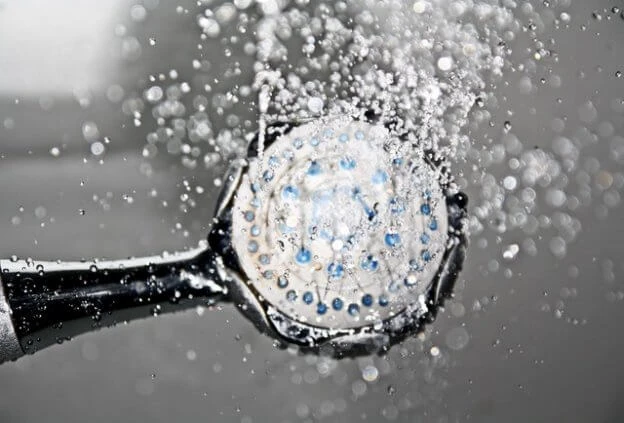
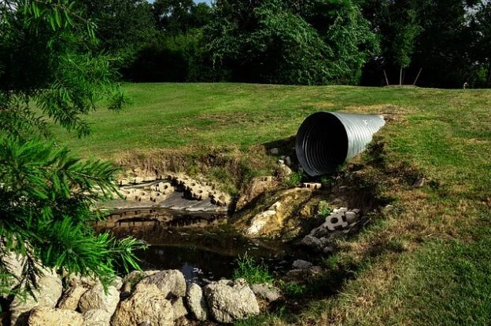

+ Piscina com Hidro – 4 vantagens que você precisa conhecer
Quem nunca quis ter uma piscina com hidro? Para muitos, isso pode parecer somente um luxo, mas você sabia que ter uma bomba para hidromassagem é.
Ler maisConfira as últimas notícias e dicas separadas pelos nossos especialistas.
Quem nunca quis ter uma piscina com hidro? Para muitos, isso pode parecer somente um luxo, mas você sabia que ter uma bomba para hidromassagem é.
Ler maisProcurando por um equipamento extremamente eficiente e com excelente custo-benefício? Então, você precisa conhecer as bombas sapo! Esse tipo de.
Ler maisAs bombas d’água são um dos equipamentos mais importantes para empreendimentos que necessitam transportar grandes volumes de água entre.
Ler mais
O pressurizador de água é um dos equipamentos mais indicados para resolver problemas de força da água em empreendimentos em geral,.
Ler maisDurante o verão, em muitos Estados brasileiros, encontramos um grave problema: inundações. Essa complicação, decorrente das fortes chuvas e da.
Ler maisO sistema de esgoto é constituído por uma rede de tubulações que levam águas residuais para uma estação de tratamento. Ou seja, trata-se de.
Ler mais
O verão está chegando e o calor bate na porta do Brasil inteiro… Você sabe o que isso significa? Está na hora de prepararmos as piscinas para.
Ler maisSer síndico de um condomínio não é tarefa fácil: muita burocracia para resolver, soluções a serem propostas, lidar com todos os.
Ler mais
Ruídos estranhos, vibrações e oscilações no painel. Aprenda a identificar os alertas do sistema de bombeamento antes do prédio ficar desabastecido e evite chamados de emergência de madrugada.
Ler mais
Equipamentos antigos ou mal dimensionados podem inflar a conta de energia do condomínio em até 30%. Entenda como a troca preventiva se paga sozinha com a economia mensal.
Ler mais